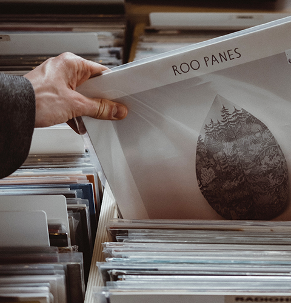

더 써드맨 레코드 대표이자 기타리스트, 그리고 칼럼니스트이고 한
잭 화이트(Jack White)는 미국 문화잡지인 롤링스톤에서 다음과 같이 말했습니다.
“앞으로 음악은 극단적인 공유와 극단적인 소유, 즉 스트리밍과 바이닐로만 존재할 것이다!”
이는 더 이상 CD와 mp3가 더 이상 음악을 저장하는 매체로서 가치를 상실했다는 사실을
웅변으로 말해주고 있습니다. 뉴트로(New-tro) 붐을 타고 레거시 저장매체에서 차세대
저장매체로 각광받게 된 바이닐은 현재 뮤지션이나 팬들에게 가장 선호되는 음악을
소유하는 방식이 되었습니다. 하지만 바이닐은 해외와 달리 아직은 저변이 넓지 않은데다
제작 단가가 비싼 탓에 너무나 사랑하지만 ‘가까이 하기엔 너무 먼 당신’인 것이 현실입니다.
이런 현실에서 저희 LP콜렉터는 다양한 LP 발매를 통한 바이닐의 저변을 넓힐 수 있는 방법을
모색했고, 그 결과 나온 것이 ‘온리 오버 백(Only over 100)' 시스템입니다.
앞으로 이 ‘온리 오버 백’을 통해 많은 뮤지션들과 팬들이 ‘음악을 가장 사랑하는 방식으로
소유하시기를 바랍니다.
Only
Over
100?

소유 가치 up
선주문이 100장 이상 되면, 무조건 바이닐로 제작하는 프로젝트
입니다. (Only Over 100 Order... Manufacturing Start!) 또한 모든 수량이 넘버링 되는 한정판이므로 팬들의 입장에서는 소유의 가치가
뛰어나고, 제작자 입장에서는 재고 부담이 없습니다. 또한 실제로 저희가 확보하고 있는 판매처가 있어서 선주문 100장이 안 된다고 해서 프로젝트가 중단되는 경우는
없습니다.
높은 수익 기대
중간 유통과 소매 과정을 과감하게 생략하고, 생산지에서 바로 배송하는 시스템으로 100장 발매에 손익분기점이 맞춰져 있습니다. 때문에 뮤지션은 다른 방식으로 바이닐을
발매하는 것보다 더 높은 수익을 기대할 수 있습니다.
매력적인 홍보 수단
총 1개월에 걸쳐 팬들과 소통하며 진행되는 프로젝트입니다.
그 기간 동안 앨범에 대한 지속적인 홍보가 가능합니다.
신보를 발매하는 뮤지션 측에서 볼 때 매력적인 홍보 수단이 될 수 있습니다.
process
01
LP콜렉터 홈페이지, 블로그, 페이스북, 프로세스, 유튜브 등에서 판매 개시 예고를 합니다. 동시에 페이스북 유료 홍보와 보도 자료를 배포합니다. 그리고 아티스트의
음원을 해외에 보내 LP제작을 위한 스템퍼(금형) 제작을 시작합니다. 이 기간 동안 디자인의 세부 디자인, 사은품, 라이너 노트 등이 순차적으로 공개됩니다.
02
스템퍼가 도착하면, 바로 테스트 엘피를 만들어 동영상
으로 만들어 판매가 임박했음을 알립니다. 그리고 자켓
과 라벨 디자인이 확정된 상태에서 주문 공지를 띄웁니
다. 이때 구매자들은 구매좌표로 들어와 2주 동안 주문
을 하게 됩니다.
03
주문 접수와 동시 제작을 진행하며 2주 후 주문 마감 뒤 최종 생산량(구매자 주문 매수 + 아티스트 증정본 + 자사 보유분)을 정하고, 제작 완료 후 스템퍼로 기념
액자를 만들어 아티스트에게 전달함으로써 온리오버백 프로젝트를 종료합니다.